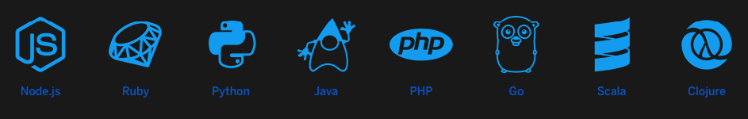
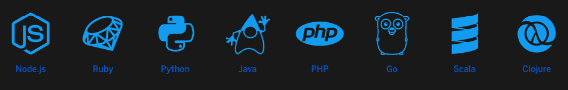
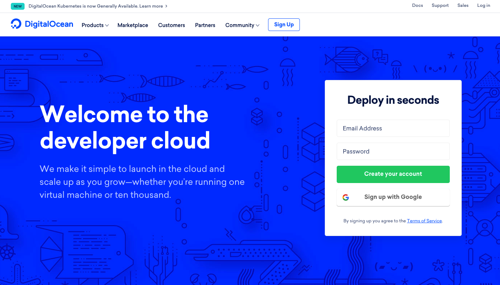
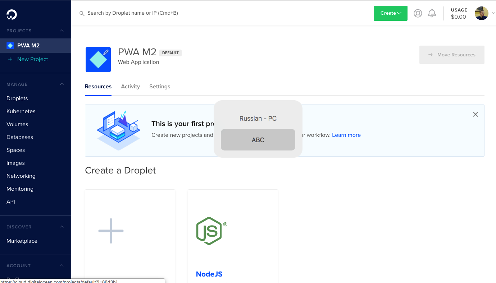
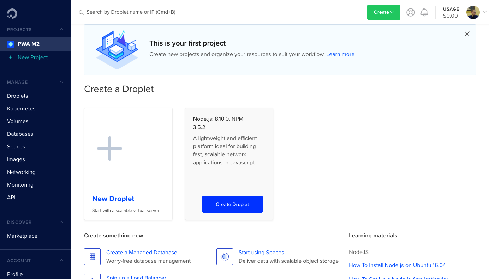
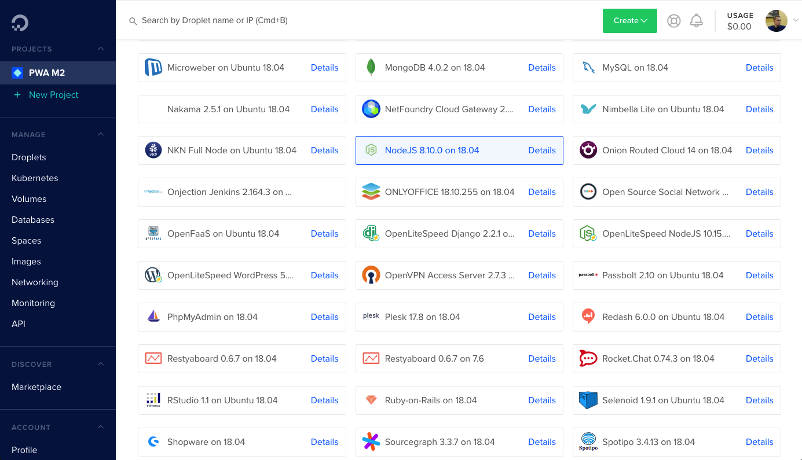
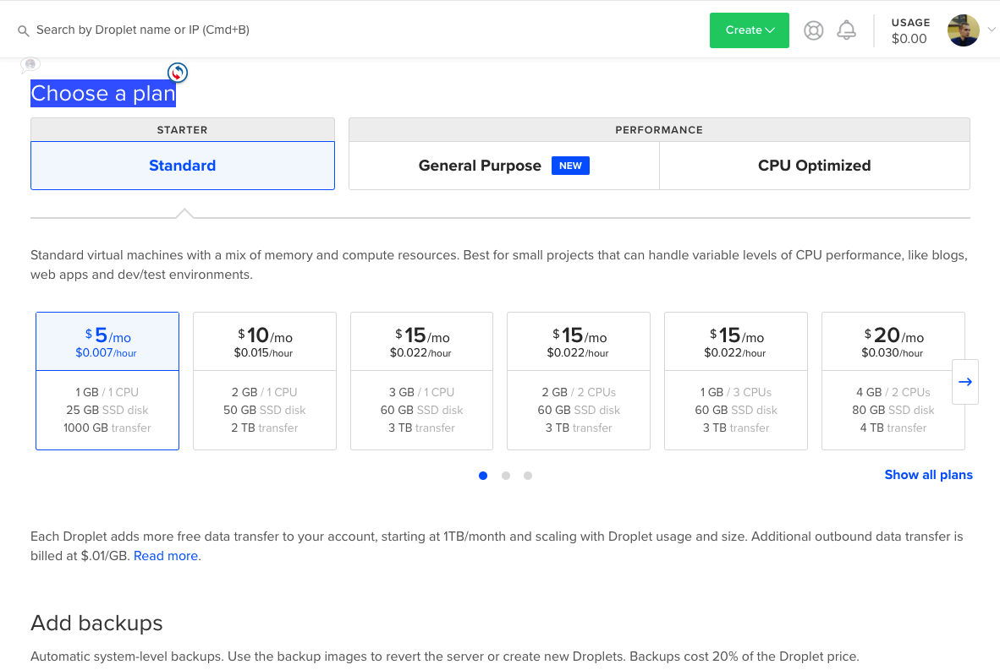
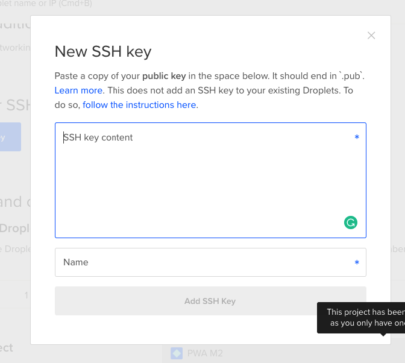
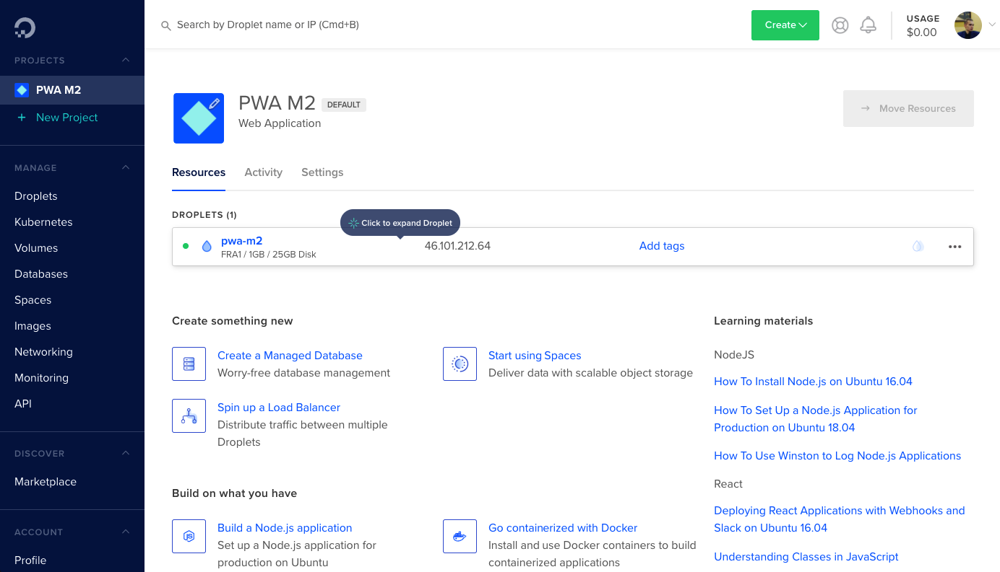
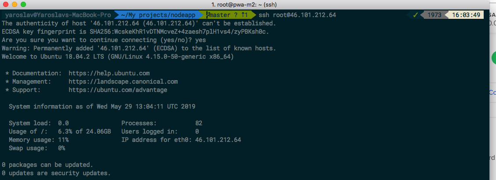

Heroku / DigitalOcean
introduction
My name is Yaroslav Tobolich
I am Web Technologist. I work with Magento.
Plan
- What is heroku?
- What is DigitalOcean?
What is Heroku?
- Heroku is a cloud Platform-as-a-Service (PaaS) supporting several programming languages that is used as a web application deployment model.
- Heroku, one of the first cloud platforms, has been in development since June 2007.
How Heroku Works?
Heroku uses AWS servers and "Containers" in the background.
When you use Heroku, your hosting costs are wrapped into Heroku’s platform and pricing.
Because of this setup, scaling can become a bit pricey when your app grows.
They Abstract all of the Iaas logic and allow the user a management console /configuration file based solution.
Supported Languages
 

Why Heroku?
- Cheap during development and testing (reasonable after that)
- Quick and easy to get started
- Scales really well
- git based workflow
- Release management and rollback
LET'S
GET
STARTED
- heroku create myapp
- git push heroku master
- That's it!
Install Heroku
macOS
brew install heroku/brew/heroku
Ubuntu 16+
sudo snap install heroku --classic
Windows
Download the appropriate installer for your Windows in Heroku website
First we need an app
Let's clone this one from heroku tutorial and make deploy app
mkdir nodeapp
cd nodeapp
git clone https://github.com/heroku/node-js-getting-started.git .
Next we need to create an app on Heroku
$ heroku login
Email: name@example.com
Password (typing will be hidden):
Authentication successful.
$ heroku create
Creating app... done, ⬢ morning-ravine-84069
https://morning-ravine-84069.herokuapp.com/
| https://git.heroku.com/morning-ravine-84069.git
Now you're created first heroku app
git push heroku master
Enumerating objects: 497, done.
Counting objects: 100% (497/497), done.
Delta compression using up to 8 threads
Compressing objects: 100% (372/372), done.
Writing objects: 100% (497/497), 231.55 KiB | 77.18 MiB/s, done.
Total 497 (delta 90), reused 497 (delta 90)
remote: Compressing source files... done.
remote: Building source:
remote:
remote: -----> Node.js app detected
remote: -----> Launching...
remote: https://fast-headland-39451.herokuapp.com/ deployed to Heroku
Now we can open our web-app with url, or by using this handy shortcut
heroku open
My appliction link
Other Helpful Commands
access manage user access to apps
addons tools and services for developing, extending, and operating your app
apps manage apps on Heroku
auth check 2fa status
buildpacks scripts used to compile apps
config environment variables of apps
git manage local git repository for app
maintenance enable/disable access to app
pipelines groups of apps that share the same codebase
plugins list installed plugins
releases display the releases for an app
reviewapps disposable apps built on GitHub pull requests
run run a one-off process inside a Heroku dyno
sessions OAuth sessions
status status of the Heroku platform
update update the Heroku CLI
Heroku Deployment Documentation
- https://devcenter.heroku.com/
- https://devcenter.heroku.com/articles/getting-started-with-nodejs
What is DigitalOcean?
- IaaS alternative to Amazon EC2
- Only provide compute resources
- No Windows developers allowed
Why is DigitalOcean?
- Improve the developer experience
- Lower cost structure
- Higher performance
Getting Started
First, navigate to digitalocean.com
Next, sign in or make an account
Click Create Droplet
Choose Droplet node.js
Choose a plan
Add a ssh key
Click create! Wait for it to finish firing up your droplet
Log in by opening a terminal, and running ssh
Do whatever you want
I deploying magento 2 PWA.